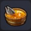
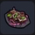
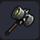
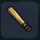
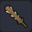
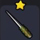
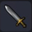
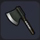
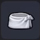

 |
부야베스 | 생선과 조개를 푹 끓여낸 진한 수프 ■ 조리시간 : 60초 ■ 만복 65% 회복 ■ HP 20 회복 방어력 상승 |
생선 1 토마토 1 깨끗한물 1(갈증 항아리) |
3칸 조리대 |
| 치즈리조또 | 볶은 쌀과 치즈로 만든 요리 ■ 조리시간 : 60초 ■ 만복 65% 회복 ■ HP 20 회복 |
밀 1 치즈 1 버터 1 |
3칸 조리대 | |
| 밀죽 | 밀을 오랫동안 푹 끓여 만든 죽 ■ 조리시간 : 60초 ■ 만복 30% 회복 ■ HP 10 회복 |
밀 1 파 1 깨끗한물 1(갈증 항아리) |
3칸 조리대 | |
| 듬뿍버섯 | 버섯을 산더미처럼 올린 요리 ■ 조리시간 : 60초 ■ 만복 55% 회복 ■ HP 10 회복 채굴력 상승 |
버섯 1 씁쓸버섯 1 하늘색 느타리 1 |
3칸 조리대 | |
| 된장국 | 뜨거운 물에 된장을 풀어 파를 넣은 것 ■ 조리시간 : 45초 ■ 만복 5% 회복 ■ HP 35 회복 |
된장 1 파 1 깨끗한물 1(갈증 항아리) |
3칸 조리대 | |
| 과일타르트 | 과일을 잔뜩 올린 타르트 ■ 조리시간 : 45초 ■ 만복 25% 회복 ■ HP 15 회복 |
과일 1 밀 1 수수 1 |
3칸 조리대 | |
| 케이크 | 폭신푹신한 크림을 겹겹이 쌓은 과자 ■ 조리시간 : 45초 ■ 만복 25% 회복 ■ HP 20 회복 |
밀 1 수수 1 딸기 1 |
3칸 조리대 | |
| 팥 샌드위치 | 카스텔라 사이에 양갱을 끼운 과자 ■ 조리시간 : 45초 ■ 만복 30% 회복 ■ HP 20 회복 |
밀 1 수수 1 콩 1 |
3칸 조리대 | |
| 따뜻한 우유 | 마시면 나른해지는 따끈한 우유 ■ 조리시간 : 30초 ■ 만복 5% 회복 ■ HP 15 회복 혼란내성 상승 |
우유 1 | 1칸 조리대 이상 | |
| 우유 | 진하고 맛있는 신선한 우유 ■ 만복 5% 회복 ■ HP 15 회복 혼란 방지 |
목장에서 소가 드롭 | 갈증 항아리로 짜기 가능 | |
| 버블 보리즙 | 밀을 사용해 만든 주스 ■ 조리시간 : 100초 ■ 만복 8% 회복 ■ HP 10 회복 |
밀 1 | 술통 | |
| 루비라 | 과일을 사용해 만든 주스 ■ 조리시간 : 10초 ■ 만복 5% 회복 ■ HP 15 회복 ST 소모 감소 |
과일 1 | 술통 | |
| 야채 주스 | 야채를 사용해 만든 주스 ■ 조리시간 : 10초 ■ 만복 6% 회복 ■ HP 15 회복 ST 소모 감소 |
야채 1 | 술통 | |
| 차킬라 | 선인장을 사용해 만든 주스 ■ 조리시간 : 10초 ■ 만복 7% 회복 ■ HP 15 회복 ST 소모 감소 |
선인장 프루트 1 | 술통 | |
| 블랙 커피 | 잠을 깨는 데 효과적인 쓰고 향긋한 커피 ■ 조리시간 : 30초 ■ 만복 5% 회복 ■ HP 15 회복 수면 내성 |
커피콩 1 | 술통 | |
| 꿈틀꿈틀 파스타 | 입안에서 꿈틀거리는 기분 나뿐 파스타 ■ 조리시간 : 30초 ■ 만복 20% 회복 ■ HP 20 회복 |
꿈틀거리는 덩굴 1 | 1칸 조리대 이상 | |
| 우중충 그릴 | 축축한 식삼의 비릿한 구이 ■ 조리시간 : 30초 ■ 만복 30% 회복 ■ HP 10 회복 공격력 상승 |
썩은 고기 1 | 1칸 조리대 이상 | |
 |
끈적끈적 볶음 | 뒷맛이 기분 나쁜 질척한 볶음 ■ 조리시간 : 30초 ■ 만복 50% 회복 ■ HP 35 회복 공격력 상승 |
꿈틀거리는 덩굴 1 썩은 고기 1 |
2칸 조리대 이상 |
| 메가 마물 정식 | 마물들이게 인기 있는 요리만을 모은 코스 요리 ■ 조리시간 : 60초 ■ 만복 80% 회복 ■ HP 50 회복 공격력 상승 |
꿈틀거리는 덩굴 1 썩은 고기 1 씁쓸버섯 1 |
3칸 조리대 | |
| 거대 나무망치 | 목재를 다듬어 튼튼하게 가공해서 만든 해머 ■ 블록 공격력 4 ■ 단단한 것을 부술 수 있다 |
목재 3 | 하얀영감에게서 획득 / 텅 빈 섬 작업대 / 모루 | |
 |
거대 쇠망치 | 철을 가공해서 만든 무거운 해머 ■ 블록 공격력 6 ■ 꽤 단단한 것을 부술 수 있다 |
철괴 3 | 모루 |
| 워 해머 | 강철올 만들어진 대단히 무거운 해머 ■ 블록 공격력 12 ■ 매우 단단한 것을 부술 수 있다 |
강철괴 3 | 모루 | |
| 빌더 해머 | 특별한 힘을 가진 굉장한 해머 ■ 블록 공격력 12 ■ 엄청 단단한 것을 부술 수 있다 ※ 어둑어둑섬에서 오리할콘 입수 후 or 엔딩 후 |
오리할콘 3 철괴 1 강철괴 1 금 1 |
모루 | |
 |
노송나무 막대 | 나뭇가지를 깎아서 쥐기 편하게 만든 조잡한 무기 ■ 공력력 8 |
목재 1 | 텅 빈 섬 작업대 / 모루 |
| 돌검 | 날카롭게 쪼갠 돌에 나무 자루를 붙여 만든 검 ■ 공력력 18 ※ 플레이어 Lv.3 |
석재 3 | 모루 | |
 |
가시나무 검 | 가시나무를 단 나무 검 ■ 공력력 28 ※ 플레이어 Lv.5 |
작은 가시 2 목재 1 |
모루 |
 |
독침 | 가시나무를 가공해서 만든 독이 발린 무기 ■ 공력력 20 ■ 상대방을 즉사시킬 수 있다 ※ 몬조라섬에서 독벌레 처치 후 |
작은 가시 1 거름 1 풀 실 1 |
모루 |
| 구리검 | 구리를 벼려 만든 둔한 날의 검 ■ 공력력 40 ※ 플레이어 Lv.12 |
동괴 3 | 모루 | |
 |
철검 | 철을 벼려 만든 단단하고 날카로운 검 ■ 공력력 50 ※ 플레이어 Lv.15 |
철괴 3 | 모루 |
| 드래곤 킬러 | 장갑에 칼날을 단 특수한 모양의 무기 ■ 공격력：52 ■ 드래곤족에 큰 대미지를 준다 ※ 오카무르섬의 오아시스 남서쪽 드래곤 솔저 처치 후 |
용의 비늘 1 금괴 1 철괴 4 |
모루 | |
| 매의 검 | 대단히 가볍고 튼튼한 금속으로 만들어진 검 ■ 공력력 42 ■ 한 번에 2회 공격할 수 있다 ※ 꽁꽁섬에서 메탈 헌터 처치 후 |
강철괴 3 메탈 젤리 1 금괴 1 |
모루 | |
| 강철검 | 강철을 벼려 만든 무겁고 근사한 검 ■ 공력력 64 ※ 플레이어 Lv.21 |
강철괴 3 | 모루 | |
| 불꽃 검 | 활활 타오르는 커다란 불꽃을 본뜬 검 ■ 공력력 74 ■ 불꽃의 힘이 담겼다 / 회전 베기로 불덩어리 발사 ※ 플레이어 Lv.27 |
강철검 1 폭탄돌 3 마력의 수정 3 |
마법의 작업대 | |
| 가이아의 검 | 강철을 수없이 두드려 날카롭게 벼린 검 ■ 공격력：82 ※ 문부르크섬 거점 남쪽 키이스 드래곤을 처치 후 |
강철괴 4 금괴 1 |
모루 | |
| 빛의 검 | 마법을 주입한 금속으로 만들어진 신비로운 검 ■ 공격력：80 ■ 마법의 힘을 가진 ※ 문부르크섬 클리어 후 / 빌더 하트 1000 교환 (잠금 해제) |
강철검 1 붉은 보석 1 미스릴 3 |
마법의 작업대 | |
| 패왕의 검 | 전설의 금속을 신성한 힘을 담아 벼려낸 검 ■ 공력력 86 ■ 회전 베기가 특히 큰 위력을 발휘한다 ※ 파괴 천체 시도에서 아크데몬을 처치 후 ※ 어둑어둑섬에서 메탈 킹을 처치 후 |
오리할콘 3 블루 메탈 1 금괴 1 강철괴 2 |
모루 | |
| 번개의 검 | 강철을 수없이 두드려 날카롭게 벼린 검 ■ 공격력：96 ※ 으스스섬에서 하곤의 기사가 희귀 드롭 |
강철검 1 마력의 수정 3 천둥의 돌 1 |
마법의 작업대 | |
| 파괴의 검 | 불길한 오라가 감도는 거대한 검 ■ 공력력 126 ■ 어쩐지 위험한 냄새가 풍긴다 ※ 어둑어둑섬에서 보스 트롤을 처치 후 |
오리할콘 2 메탈 젤리 1 꿰뚫어버리는 큰 뿔 1 찍어발기는 발톱 1 |
모루 | |
| 메의 검 | 매의 검을 흉내내어 만든 검 ■ 공력력 126 ※ 한 번에 2회 공격할 수 있다 |
파괴의 검 1(장착) 매의 검 1(외형변경) |
드레서 | |
| 외톨이 메탈의 검 | 굳은 외톨이 메탈을 소래로 만든 검 ■ 공격력：112 ※ 작은 메달 90장 제조법 입수 |
메탈 젤리 3 강철괴 2 |
모루 | |
| 로토의 검 | 위대한 용사의이름이 부여된 전설의 검 ■ 공력력 118 ■ 회전 베기가 특히 큰 위력을 발휘한다 ※ 으스스섬에서 다스 드래곤 처치 후 |
오리할콘 3 강철괴 2 금괴 1 메탈 젤리 1 블루 메탈 1 |
모루 | |
| 용사의 깃발 | 병사를 인도하는 깃발 병사가 따라온다 ■ 공력력 2 |
스토리 진행 문부르크 |
/ | |
| 곤봉 | 목재를 깎아 가공한 무기 [시도 전용] ■ 공력력 12 |
목재 2 | 텅 빈 섬 작업대 모루 |
|
| 돌도끼 | 돌로 만든 날에 그립을 달아 만든 도끼 [시도 전용] ■ 공력력 24 ※ 플레이어 Lv.4 |
석재 3 목재 1 실 1 |
모루 | |
| 가시 곤봉 | 가시나무를 단 곤봉 [시도 전용] ■ 공력력 42 ※ 플레이어 Lv.6 |
가시나무 2 목재 2 |
모루 | |
 |
쇠도끼 | 철로 만든 날에 그립을 달아 만든 도끼 [시도 전용] ■ 공력력 56 |
철괴 3 목재 1 |
모루 |
| 요괴 곤봉 | 목재를 다듬어 튼튼하게 가공해서 만든 곤봉 [시도 전용] ■ 공력력 62 ※ 오카무르섬 하층 트롤 처치 후 |
철괴 3 목재 6 |
모루 | |
| 배틀 액스 | 자루도 금속으로 된 무거운 시도용 도끼 [시도 전용] ■ 공력력 74 ※ 플레이어 Lv.22 |
강철괴 3 철괴 3 |
모루 | |
| 기간테스의 곤봉 | 마력으로 강화된 거대한 곤봉 [시도 전용] ■ 공력력 88 ※ 플레이어 Lv.27 |
목재 10 마력의 수정 3 |
모루 | |
| 마신의 쇠망치 | 엄청난 파워를 지닌 거대한 해머 [시도 전용] ■ 공력력 120 |
오리할콘 3 메탈 젤리 3 |
/ | |
| 시도의 곤봉 | 시도를 위해 만든 낡은 곤봉 [시도 전용] ■ 공력력 12 |
스토리 진행 | / | |
| 하고이타 | 새해에 공놀이를 하는 데 쓰는 장방형의 판자 ■ 공격력 1 ■ 맞히면 공중을 난다 ■ 무료 DLC (새해 팩) |
목재 10 | 모루 | |
| 빌더의 옷 | 처음에 몸에 걸치고 있던 지극히 평범한 옷 ■ 수비력 5 |
풀 실 4 | 재봉 작업대 | |
| 천 옷 | 간소한 천으로 만들어진 흔한 옷 ■ 수비력：2 ■ 색 변경 가능 ※ 빌더 하트 5 교환 (잠금 해제) |
풀 실 3 실 1 |
재봉 작업대 | |
| 연습복 | 빳빳한 천으로 만들어진 움직이기 편한 옷 ■ 수비력 16 ■ 빠르게 이동 / 색 변경 가능 ※ 플레이어 Lv.8 |
풀 실 4 실 1 |
모루 | |
| 거북이 등딱지 | 거북이 등딱지처럼 등 부분을 둥글게 만든 갑옷 ■ 수비력：23 ■ 색 변경 가능※ 몬조라섬 습지입구 남서쪽에서 거대게 처치 후 |
뼈 5 풀 실 1 |
모루 | |
| 체인 메일 | 천과 금속 실을 엮어 만든 튼튼한 옷 ■ 수비력 28 ※ 플레이어 Lv.12 |
동괴 2 모피 1 |
모루 | |
| 철 갑옷 | 철을 펴서 연결해 만든 갑옷 ■ 수비력 39 ※ 플레이어 Lv.18 |
철괴 3 모피 1 실 1 |
모루 | |
| 드래곤 메일 | 드래곤의 비늘을 겹쳐서 만든 튼튼한 갑옷 ■ 수비력：42 ■ 불꽃과 얼음 대미지를 줄인다 ※ 오카무르섬의 거점 동쪽 드래곤 솔져를 처치 후 |
용의 비늘 3 금괴 1 실 1 |
모루 | |
| 강철 갑옷 | 강철을 단단히 맞붙여 만든 무거운 갑옷 ■ 수비력 42 ※ 플레이어 Lv.23 |
강철괴 3 풀 실 2 실 1 |
모루 | |
| 마법의 갑옷 | 마법을 주입한 금속을 가공해서 만든 초록빛의 갑옷 ■ 수비력：48 ■ 불꽃과 얼음 대미지를 줄인다 ※ 플레이어 Lv.28 |
강철 갑옷 1 마력의 수정 5 |
마법의 작업대 (100초) |
|
| 가이아의 갑옷 | 많은 강철로 매우 튼튼하게 만든 갑옷 ■ 수비력：56 ※ 문부르크섬 문페타 북동쪽 키이스 드래곤을 처치 후 |
강철괴 3 금괴 11 솜 2 |
모루 | |
| 빛의 갑옷 | 정령의 가호로 보호되는 전설의 갑옷 ■ 수비력 61 ■ 지형 대미지 무효 / 불꽃 얼음 대미지 경감 ※ 파괴 천체 시도에서 실버 데빌을 처치 후 ※ 첨벙첨벙섬에서 머맨다인을 처치 후 |
블루 메탈 3 오리할콘 2 붉은 보석 1 금괴 2 |
모루 | |
| 악마의 갑옷 | 사악한 분위기를 휘감은 갑옷 ■ 수비력：87 ■ 어쩐지 위험한 냄새가 풍긴다 ※ 으스스섬에서 대마신(대)을 처치 후 |
오리할콘 2 메탈 젤리 1 속인 빈 큰 해골 1 뼈 3 모피 1 |
모루 | |
| 칼날 갑옷 | 깨진 갑옷을 가공해서 가시를 붙인 갑옷 ■ 수비력 75 ■ 적에게서 받은 대미지의 절반을 가한다 ※ 플레이어 Lv.36 |
오리할콘 2 미스릴 3 모피 1 |
모루 | |
| 여행자의 옷 | 견고하고 가볍고 모험에 적합한 멋들어진 옷 ■ 수비력：5 ■ 빠르게 이동 가능 / 색 변경 가능 ※ 빌더 하트 10 교환 (잠금 해제) |
풀 실 5 실 2 |
재봉 작업대 | |
 |
목욕 수건 | 물 실을 엮어 만든 흡수력이 뛰어난 수건 ■ 수비력：2 ■ 색 변경 가능 ※ 몬조라섬 목욕탕 만들기 (잠금 해제) |
풀 실 6 | 텅 빈 섬 작업대 |
| 버니 슈트 | 보는 이의 시선을 사로잡는 패셔너블한 옷 ■ 수비력：10 ■ 색 변경 가능 ※ 오카무르섬 클리어 후 (잠금 해제) |
솜 2 풀 실 2 모피 3 |
텅 빈 섬 작업대 | |
| 수영복 | 대담한 라인의 대단히 멋진 수영복 ■ 수비력：5 ■ 색 변경 가능 ※ 텅 빈 섬에서 언제나 여름 수영장을 만들자 (잠금 해제) |
솜 3 실 1 |
텅 빈 섬 작업대 | |
| 병사의 옷 | 성의 병사가 걸치는 심플한 제복 ■ 수비력：10 ※ 문부 거점 기준 4 |
풀 실 2 실 1 모피 2 |
텅 빈 섬 작업대 | |
| 마을 사람의 옷 | 마을 사람들이 선호하는 약간 세련된 옷 ■ 수비력：10 ※ 몬조라섬 클리어 후 |
풀 실 3 실 1 |
텅 빈 섬 작업대 | |
| 마을 사람의 옷B | 차분하고 움직이기 편한 옷 ■ 수비력：10 ※ 오카무르섬 클리어 후 |
풀 실 3 실 1 솜 1 |
텅 빈 섬 작업대 | |
| 상인의 옷 | 여행 중 장사하기에 적합한 편한 옷 ■ 수비력：10 ※ 오카무르섬 클리어 후 / 빌더 하트 20 교환 (잠금 해제) |
풀 실 3 실 1 |
텅 빈 섬 작업대 | |
| 농사꾼의 옷 | 농사꾼이 직업인 주민들의 옷 ■ 수비력：10 ※ 몬조라섬 클리어 후 |
풀 실 3 실 1 |
텅 빈 섬 작업대 | |
| 수녀의 옷 | 교회에서 신을 섬기는 수녀들의 옷 ■ 수비력：10 ※ 문부르크 클리어 후 |
솜 3 은괴 2 |
텅 빈 섬 작업대 | |
| 시인의 옷 | 세계를 여행하며 시를 쓰는 시인들의 옷 ■ 수비력：10 ※ 문부르크 클리어 후 |
솜 3 금괴 2 |
텅 빈 섬 작업대 | |
| 누더기 옷 | 여기저기 덧댄 허름한 옷 ■ 수비력 2 ※ 감옥섬 클리어 후 |
풀 시 4 끈 1 |
재봉 작업대 | |
| 가죽 갑옷 | 무두질한 가죽을 쇠 장식으로 연결해 만든 갑옷 ■ 수비력：22 ■ 색 변경 가능 ※ 주렁주렁섬에서 오크 킹을 처치 후 |
모피 3 실 1 |
모루 | |
| 회피의 옷 | 입으면 아주 약간 빠르게 움직일 수 있는 신비한 옷 ■ 수비력 40 ■ 빠르게 이동 / 색 변경 가능 ※ 뒹굴뒹굴섬에서 킹 슬라임 처치 후 |
풀 실 3 솜 2 마력의 수정 1 실 1 |
모루 | |
| 털가죽 코트 | 푹신푹신한 모피로 만든 코트 ■ 수비력：54 ■ 색 변경 가능 ※ 출렁출렁섬에서 실버 데빌(대)를 처치 후 |
모피 5 | 모루 | |
| 물의 날개옷 | 특상품 실을 아름답게 짜서 만든 깃옷 ■ 수비력：40 ■ 불꽃과 얼음 대미지를 크게 줄인다 ※ 오카무르섬 하층 용암호수(워프) 북쪽 보물 상자 |
솜 5 실 3 |
모루 | |
| 로레시아의 옷 | 로레시아 왕자의 옷 ■ 수비력：15 ※ 작은 메달 14장 제조법 입수 |
풀 실 5 모피 2 실 2 |
텅 빈 섬 작업대 | |
| 사말토리아의 옷 | 사말토리아 왕자의 옷 ■ 수비력：15 ※ 작은 메달 38장 제조법 입수 |
풀 실 5 금괴 1 |
텅 빈 섬 작업대 | |
| 문부르크의 옷 | 문부르크 공주의 옷 ■ 수비력：15 ※ 작은 메달 70장 제조법 입수 |
풀 실 4 솜 3 |
텅 빈 섬 작업대 | |
| 외톨이 메탈의 갑옷 | 굳은 외톨이 메탈을 소재로 만든 갑옷 ■ 수비력：75 ※ 작은 메달 82장 제조법 입수 |
메탈 젤리 3 강철괴 3 모피 2 실 2 |
모루 | |
| 냄비 뚜껑 | 나무판에 손잡이를 단 심플한 주인공용 방패 ■ 수비력 5 ※ 플레이어 Lv.9 |
목재 1 | 모루 | |
| 철 방패 | 철을 판판하게 두들겨 나무 손잡이를 붙인 방패 ■ 수비력 12 ※ 플레이어 Lv.19 |
철괴 2 목재 1 |
모루 | |
| 힘의 방패 | 대지의 힘이 깃든 주인공용 방패 ■ 수비력：14 ※ 오카무르섬의 트롤 처치 후 |
금괴 1 은괴 1 블루 메탈 1 |
모루 | |
| 강철 방패 | 강철을 가공해서 만든 튼튼한 방패 ■ 수비력 22 ※ 플레이어 Lv.24 |
강철괴 2 목재 1 |
모루 | |
| 마법의 방패 | 빛나는 금속을 가공해서 만든 가볍고 견고한 방패 ■ 수비력：24 ■ 불꽃과 얼음 대미지를 줄인다 ※ 플레이어 Lv.29 |
강철 방패 1 마력의 수정 3 |
마법의 작업대 |